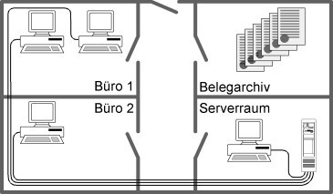

Jedes Unternehmen und jede Behörde muss eine Organisation haben, die das Zusammenspiel der verschiedenen Rollen und Einheiten mit den Geschäftsprozessen und Ressourcen in der Institution steuert. Die meisten Institutionen haben eine Organisationseinheit, die für Regelung und Steuerung des allgemeinen Betriebs sowie für Planung, Organisation und Durchführung aller Verwaltungsdienstleistungen verantwortlich ist. Diverse Aufgaben der Informationssicherheit müssen von dieser Einheit umgesetzt oder mitgetragen werden.
1.2 Lebenszyklus
Ein angemessenes Sicherheitsniveau kann in einer Institution nur erreicht werden, wenn übergreifende Regelungen zur Informationssicherheit verbindlich festgelegt werden. Hierzu sind eine Reihe von Maßnahmen umzusetzen, beginnend mit Festlegung und Zuweisung von verantwortlichen Personen für einzelne Objekte (z. B. Informationen, Geschäftsprozesse, Anwendungen, IT-Komponenten) über entsprechende organisatorische Sicherheitsrichtlinien und Handlungsanweisungen bis hin zur Behandlung von schützenswerten Betriebsmitteln. Die Schritte, die dabei im Sinne eines kontinuierlichen, sich wiederholenden Informationssicherheitsprozesses durchlaufen werden sollten, sowie die Maßnahmen, die in den jeweiligen Schritten beachtet werden sollten, sind im Folgenden aufgeführt.
Planung und Konzeption
Für die Initiierung und die Umsetzung der sich aus den Sicherheitszielen und Sicherheitsrichtlinien ergebenden Prozesse sind organisatorische und personelle Festlegungen zu treffen. Hierbei sind gegebenenfalls die Mitbestimmungsrechte der Personalvertretung zu wahren (siehe ORP.1.M10 Rechtzeitige Beteiligung des Personal-/Betriebsrates). Die verschiedenen Organisationsebenen und die hier tätigen Personen benötigen konkrete Handlungsanweisungen und Verantwortlichkeiten zur Abwicklung der sie betreffenden Prozesse (siehe ORP.1.M2 Zuweisung der Verantwortung für Informationen, Anwendungen und IT-Komponenten).
Die strategischen Überlegungen sind in einem Betriebskonzept bezüglich ihrer Umsetzung im Unternehmen bzw. in der Behörde zu detaillieren.
Der Einsatz der erforderlichen Betriebsmittel ist auf die Aufgabenerfüllung und die Sicherheitsanforderungen abzustimmen und über eine Betriebsmittelverwaltung (siehe ORP.1.M7 Betriebsmittelverwaltung) zu dokumentieren. Diese muss vollständig sein und durch entsprechende Prozesse auch jederzeit aktuell gehalten werden.
Voraussetzung für eine funktionierende Infrastruktur, die auch auf Störungen adäquat reagieren kann, sind Regelungen für Ersatzteilbeschaffung, Reparaturen und Wartungsarbeiten (siehe ORP.1.M11 Regelungen für Wartungs- und Reparaturarbeiten). In Wartungsverträgen ist die terminliche und inhaltliche Wartung einzelner IT-Systeme (oder Gruppen) verbindlich zu regeln, ebenso wie die erforderlichen Zugänge (Remote, vor Ort) und die an die Sicherheitsanforderungen angepassten Reaktionszeiten des mit der Wartung beauftragten Personals.
Die Aufgabenverteilung und die hierfür erforderlichen Funktionen (siehe ORP.1.M4 Funktionstrennung zwischen operativen und kontrollierenden Aufgaben) sind so zu strukturieren, dass operative und kontrollierende Funktionen auf verschiedene Personen verteilt werden, um Interessenskonflikte bei den handelnden Personen zu minimieren oder ganz auszuschalten.
Betrieb
Die festgelegten Konzeptionen werden in konkrete Handlungsanweisungen gefasst und für den Betrieb verbindlich verabschiedet. Mitarbeiterbezogene Regelungen müssen hierbei die komplette Laufbahn eines Mitarbeiters in der Institution vom Eintritt bis zum Austritt betrachten. Durch Anwendung des Need-to-Know-Prinzips und des Vier-Augen-Prinzips ist sicher zu stellen, das Berechtigungen auf den verschiedenen Ebenen (z. B. Zutritt zu Räumen, Zugang zu Informationssystemen) zielgerichtet vergeben werden und auch praktikabel sind (siehe ORP.1.M5 Vergabe von Berechtigungen).
Diese Berechtigungen sind zu dokumentieren und durch verschiedene Methoden zu unterstützen, wie z. B. kontrollierte und nachweisbare Ausgabe von Schlüsseln nur an Berechtigte, Authentisierung von Zugriffen, Zutrittskontrollsysteme für speziell gesicherte Bereiche und Kontrolle der Aktionen Betriebsfremder (siehe ORP.1.M3 Beaufsichtigung oder Begleitung von Fremdpersonen). Werden Regelungen bewusst oder unbewusst verletzt, so müssen die hieraus ableitbaren Informations- und Eskalationsprozesse den Mitarbeitern bekannt sein, so dass eine zielgerichtete Reaktion auf die Verletzung erfolgen kann (siehe ORP.1.M9 Reaktion auf Verletzungen der Sicherheitsvorgaben).
Aussonderung
Datenträger, Betriebs- und Sachmittel, die besonderen Schutzbedingungen unterliegen, sind so zu entsorgen, dass keine Rückschlüsse auf ihre Verwendung oder Inhalte gemacht werden können (siehe ORP.1.M8 Ordnungsgemäße Entsorgung von schützenswerten Betriebsmitteln). Hierzu sind entsprechende Regelungen, gegebenenfalls auch mit externen Firmen, zu treffen. Entsprechende Bestimmungen des Datenschutzes sind zu beachten.
2 Maßnahmen
Im Folgenden sind spezifische Umsetzungshinweise im Bereich "Organisation" aufgeführt.
2.1 Basis-Maßnahmen
Die folgenden Maßnahmen sollten vorrangig umgesetzt werden:
ORP.1.M1 Festlegung von Verantwortlichkeiten und Regelungen[Institutionsleitung]
Für alle wesentlichen Aufgaben und Geschäftsprozesse in einer Institution sollten die Verantwortlichkeiten nachvollziehbar geregelt sein. Die Aufgaben sollten dabei so zugeschnitten sein, dass es keine Überschneidungen zwischen ähnlichen Aufgaben gibt, aber auch keine Zuständigkeitslücken. Dies sollte für alle Bereiche eine Selbstverständlichkeit sein, für alle sicherheitsrelevanten Aufgaben ist es aber unabdingbar.
Die sicherheitsrelevanten Aufgaben aller internen und externen Mitarbeiter und Dienstleister müssen nachvollziehbar festgelegt sein. Sie müssen mit den Sicherheitszielen der Institution abgestimmt sein. Zu den Bereichen, die geregelt werden sollten, gehören beispielsweise:
explizite Zuweisung der Verantwortlichkeiten und Befugnisse an Rollen bzw. Organisationseinheiten bei allen sicherheitsrelevanten Aufgaben (Dabei ist sicherzustellen, dass alle Rollen konkreten Personen zugeordnet sind),
geeigneter Umgang mit geschäftskritischen Informationen, so dass deren Vertraulichkeit, Integrität und Verfügbarkeit angemessen geschützt sind,
Vertraulichkeitsvereinbarungen,
Einbeziehung des Sicherheitsbeauftragten bei Aufträgen und Projekten, die geschäftskritische Informationen betreffen,
Unterrichtungen über den geeigneten Umgang mit geschäftskritischen Informationen, beispielsweise im Kontakt mit Kunden oder auf Reisen,
Festlegung von Verhaltensregeln und Informationspflichten bei sicherheitsrelevanten Aktionen und bei Sicherheitsvorfällen,
Klassifikation von Informationen entsprechend ihres Schutzbedarfs.
Die Regelungen für Informationssicherheit sollten mit denen für Datenschutz und Geheimschutz in geeigneter Weise zusammengeführt werden, damit sie von den Mitarbeitern leichter adaptiert und besser wahrgenommen werden können. Wichtig ist auch, dass alle Regelungen zusammengenommen widerspruchsfrei sind.
Übergreifende Regelungen zur Informationssicherheit müssen verbindlich festgelegt werden.
Es empfiehlt sich, Regelungen unter anderem über die Themen
Datensicherung,
Datenarchivierung,
Datenträgertransport,
Datenübertragung,
Datenträgervernichtung,
Dokumentation von IT-Verfahren, Software, IT-Konfiguration,
Zutritts-, Zugangs- und Zugriffsberechtigungen,
Wartungs- und Reparaturarbeiten,
Datenschutz,
Schutz gegen Schadsoftware,
Revision,
Notfallvorsorge und
Vorgehensweise bei der Verletzung von Sicherheitsrichtlinien
zu treffen. Weitere Hinweise dazu finden sich in den jeweils relevanten IT-Grundschutz-Bausteinen.
Sollen zwischen zwei oder mehreren Kommunikationspartnern Informationen ausgetauscht werden, so sind zu deren Schutz eine Reihe von unterschiedlichen Aspekten zu beachten. Bei jeder Art von Informationsaustausch ist zunächst zu klären,
wie schutzbedürftig diese sind,
mit wem diese ausgetauscht werden dürfen und
wie diese dabei zu schützen sind.
Hierfür sollten klare und verständliche Regelungen vorliegen, die alle Formen des Informationsaustausches abdecken, also zum Beispiel den mündlichen Austausch ebenso wie Datenaustausch per Datenträger, Mail, Fax, (Mobil-) Telefon oder Internet. Generell sollte sichergestellt sein, dass Informationen nicht in falsche Hände, Augen und Ohren gelangen können und sie nicht unbemerkt verändert werden können. Allen Mitarbeitern sollte bewusst sein, dass sie dafür verantwortlich sind, interne Informationen angemessen zu schützen. Wie analoge und elektronische Informationen beim Informationsaustausch zu schützen sind, ist unter anderem ausführlich in den Bausteinen OPS.1.2.3 Informations- und Datenträgeraustausch und APP.1.1 E-Mail/Groupware beschrieben.
Die in Kraft gesetzten Regelungen sind den betroffenen Mitarbeitern in geeigneter Weise bekannt zu geben (siehe ORP.5 Anforderungsmanagement (Compliance)). Es empfiehlt sich, die Kenntnisnahme durch die Mitarbeiter zu dokumentieren. Darüber hinaus sind sämtliche Regelungen in der aktuellen Fassung an einer Stelle vorzuhalten und bei berechtigtem Interesse zugänglich zu machen.
Die getroffenen Regelungen sind regelmäßig zu aktualisieren, um Missverständnisse, ungeklärte Zuständigkeiten und Widersprüche zu vermeiden und gegebenenfalls aufzulösen. Alle Regelungen sollten deshalb auch ein Erstellungsdatum oder eine Versionsnummer enthalten.
ORP.1.M2 Zuweisung der Verantwortung für Informationen, Anwendungen und IT-Komponenten[Informationssicherheitsbeauftragter (ISB), Institutionsleitung, Leiter IT]
Um zu einer umfassenden Gesamtsicherheit zu gelangen, ist die Beteiligung aller Mitarbeiter einer Institution an der Umsetzung der erforderlichen Sicherheitsmaßnahmen erforderlich. Für alle Informationen, Geschäftsprozesse, Anwendungen und IT-Komponenten muss daher festgelegt werden, wer für diese und deren Sicherheit verantwortlich ist. Hierfür sollte immer eine konkrete Person (inklusive Vertreter) und keine abstrakte Gruppe benannt werden, damit die Zuständigkeit jederzeit deutlich erkennbar ist. Bei komplexeren Informationen, Anwendungen und IT-Komponenten sollten alle Verantwortlichen und deren Vertreter namentlich genannt sein.
Umgekehrt sollten natürlich alle Mitarbeiter wissen, für welche Informationen, Geschäftsprozesse, Anwendungen und IT-Komponenten sie in welcher Weise verantwortlich sind.
Jeder Mitarbeiter ist dabei für das verantwortlich, was in seinem Einflussbereich liegt, es sei denn, es ist explizit anders geregelt. Beispielsweise ist die Leitungsebene der Institution verantwortlich für alle grundsätzlichen Entscheidungen bei der Einführung einer neuen Anwendung, der Leiter IT zusammen mit dem Informationssicherheitsmanagement für die Ausarbeitung von Sicherheitsvorgaben für die IT-Komponenten, die Administratoren für deren korrekte Umsetzung und die Benutzer für den sorgfältigen Umgang mit den zugehörigen Informationen, Anwendungen und Systemen.
Die Fachverantwortlichen als die "Eigentümer" von Informationen und Anwendungen müssen sicherstellen, dass
der Schutzbedarf der Informationen, Geschäftsprozessen, Anwendungen und IT-Komponenten korrekt festgestellt wurde,
die erforderlichen Sicherheitsmaßnahmen umgesetzt werden,
dies regelmäßig (z. B. täglich, wöchentlich, monatlich) überprüft wird,
die Aufgaben für die Umsetzung der Sicherheitsmaßnahmen klar definiert und zugewiesen werden,
der Zugang bzw. Zugriff zu den Informationen, Anwendungen und IT-Komponenten geregelt ist,
die Informationssicherheit gefährdende Abweichungen schriftlich dokumentiert werden.
Die Fachverantwortlichen müssen zusammen mit dem Informationssicherheitsmanagement entscheiden, wie mit eventuellen Restrisiken umgegangen wird.
ORP.1.M3 Beaufsichtigung oder Begleitung von Fremdpersonen[Mitarbeiter]
Personen, die nicht der Institution angehören, wie Besucher, Handwerker, Wartungs- und Reinigungspersonal sollten, außer in Räumen, die ausdrücklich dafür vorgesehen sind, nicht unbeaufsichtigt sein (siehe auch ORP.1.M5 Vergabe von Berechtigungen). Alle Mitarbeiter sollten darauf hingewiesen werden, dass sie Betriebsfremde, die sie unbeaufsichtigt innerhalb der Behörde oder des Unternehmens antreffen, von diesem Moment an unter ihre Obhut nehmen müssen. Dies dient nicht nur der Sicherheit aller, sondern ist auch ein positiver Serviceaspekt für Betriebsfremde.
Wird es erforderlich, einen Externen allein im Büro zurückzulassen, sollte ein Kollegen ins Zimmer oder der Besucher zu einem Kollegen gebeten werden.
Ist es nicht möglich, Fremdpersonen (z. B. Reinigungspersonal) ständig zu begleiten oder zu beaufsichtigen, sollten zumindest am persönlichen Arbeitsbereich keine Informationen und Geräte frei zugänglich sein, also beispielsweise Schränke abgeschlossen und bei IT-Geräten Zugriffssperren aktiviert sein, siehe auch ORP.1.M6 Der aufgeräumte Arbeitsplatz.
Für den häuslichen Arbeitsplatz gilt, dass Familienmitglieder und Besucher sich nur dann alleine im Arbeitsbereich aufhalten dürfen, wenn alle Arbeitsunterlagen verschlossen aufbewahrt sind und die IT über einen aktivierten Zugriffsschutz gesichert ist.
Die Notwendigkeit dieser Maßnahme ist den Mitarbeitern zu erläutern und in einer Sicherheitsrichtlinie festzuhalten. Eine Dokumentation über den Aufenthalt von Fremdpersonen kann in einem Besucherbuch geführt werden.
ORP.1.M4 Funktionstrennung zwischen operativen und kontrollierenden Aufgaben
In jeder Institution müssen die Aufgaben, die zur Durchführung der Geschäftsprozesse erforderlich sind, festgelegt und Rollen bzw. Personen zugewiesen werden. Dabei muss beachtet werden, dass es Aufgaben gibt, die sich nicht miteinander kombinieren lassen.
Die Verantwortlichkeiten für alle Geschäftsprozesse und der damit zusammenhängenden Aufgaben müssen eindeutig festgelegt werden (siehe ORP.1.M1 Festlegung von Verantwortlichkeiten und Regelungen). Die Abgrenzungen und Überschneidungen zwischen den verschiedenen Rollen und Funktionen müssen klar definiert sein. Die Aufgaben und die hierfür erforderlichen Rollen und Funktionen müssen so strukturiert sein, dass operative und kontrollierende Funktionen auf verschiedene Personen verteilt werden, um Interessenskonflikte bei den handelnden Personen zu verhindern (Funktionstrennung).
Es ist eine Funktionstrennung festzulegen und zu begründen, d. h. welche Funktionen bzw. Rollen nicht miteinander vereinbar sind, also auch nicht von einer Person gleichzeitig wahrgenommen werden dürfen. Vorgaben hierfür können aus den Aufgaben selbst oder aus gesetzlichen Bestimmungen resultieren. Beispiele dafür sind:
Rechteverwaltung und Revision,
Netzadministration und Revision,
Programmierung und Test bei eigenerstellter Software,
Datenerfassung und Zahlungsanordnungsbefugnis,
Revision und Zahlungsanordnungsbefugnis.
Insbesondere wird deutlich, dass meistens operative Funktionen nicht mit kontrollierenden Funktionen vereinbar sind.
Nach der Festlegung der einzuhaltenden Funktionstrennung kann die Zuordnung der Funktionen zu Personen erfolgen. Vertreterregelungen sind ebenfalls zu berücksichtigen und zu dokumentieren (siehe auch ORP.2 Personal).
Die getroffenen Festlegungen sind zu dokumentieren und bei Veränderungen in Geschäftsprozessen zu aktualisieren. Sollte bei dieser Zuordnung eine Person miteinander unvereinbare Funktionen wahrnehmen müssen, so ist dies in einer entsprechenden Dokumentation über die Funktionsverteilung besonders hervorzuheben.
ORP.1.M5 Vergabe von Berechtigungen[Leiter IT]
Auf den verschiedenen Ebenen MÜSSEN angemessene und praktikable Berechtigungen vergeben werden (z. B. für den Zutritt zu Räumen, Zugang zu IT-Systemen, Zugriff auf Anwendungen). Es sollten immer nur so viele Rechte vergeben werden, wie es für die Aufgabenwahrnehmung notwendig ist. Es muss ein geregeltes Verfahren für die Vergabe, die Verwaltung und den Entzug von Berechtigungen geben (siehe auch ORP.4. Identitäts- und Berechtigungsmanagement).
Vergabe von Zutrittsberechtigungen
Vor der Vergabe von Zutrittsberechtigungen für Personen sind die schutzbedürftigen Räume eines Gebäudes zu bestimmen, z. B. Büro, Datenträgerarchiv, Serverraum, Technikraum, Rechenzentrum. Der Schutzbedarf eines Raumes leitet sich ab aus dem Schutzbedarf der im jeweiligen Raum verarbeiteten Informationen, der dort vorhandenen IT-Systeme und der Datenträger, die in diesem Raum gelagert und benutzt werden.
Anschließend ist festzulegen, welche Person zur Ausübung der wahrgenommenen Funktion welches Zutrittsrecht benötigt. Dabei ist die vorher erarbeitete Funktionstrennung (ORP.1. M4 Funktionstrennung zwischen operativen und kontrollierenden Aufgaben) zu beachten. Unnötige Zutrittsrechte sind zu vermeiden.
Um die Zahl zutrittsberechtigter Personen zu einem Raum möglichst gering zu halten, sollte der Grundsatz der Funktionstrennung berücksichtigt werden. So verhindert z. B. eine getrennte Lagerung von IT-Ersatzteilen und Datenträgern den unerlaubten Zugriff eines Wartungstechnikers auf die Datenträger.
Die Vergabe und Rücknahme von Zutrittsberechtigungen ist zu dokumentieren. Bei der Rücknahme einer Zutrittsberechtigung muss die Rücknahme der Zutrittsmittel gewährleistet sein. Zusätzlich ist zu dokumentieren, welche Konflikte bei der Vergabe der Zutrittsberechtigungen an Personen aufgetreten sind. Gründe für Konflikte können vorliegen, weil Personen Funktionen wahrnehmen, die bezüglich der Zutrittsberechtigungen der Funktionstrennung entgegenstehen, oder aufgrund räumlicher Notwendigkeiten.
Zur Überwachung der Zutrittsberechtigung können Personen (Pförtner, Schließdienst) oder technische Einrichtungen (Ausweisleser, biometrische Verfahren wie Irisscanner oder Fingerabdruck, Sicherheitstürschloss bzw. Schließanlage) eingesetzt werden (siehe INF.1 Gebäude). Der Zutritt zu schutzbedürftigen Räumen von nicht autorisiertem Personal (z. B. Besuchern, Reinigungs- und Wartungspersonal) darf nur bei Anwesenheit oder in Begleitung Zutrittsberechtigter erfolgen.
Regelungen über die Vergabe und Rücknahme von Zutrittsberechtigungen für Fremdpersonal und Besucher müssen ebenfalls getroffen werden.
Vergabe von Zugangsberechtigungen
Zugangsberechtigungen erlauben der betroffenen Person oder einem autorisierten Vertreter, bestimmte IT-Systeme bzw. System-Komponenten und Netze zu nutzen. Zugangsberechtigungen sollten möglichst restriktiv vergeben werden. Diese sind für jede nutzungsberechtigte Person aufgrund ihrer Funktion, unter Beachtung der Funktionstrennung (siehe ORP.1.M4 Funktionstrennung zwischen operativen und kontrollierenden Aufgaben), im Einzelnen festzulegen. Entsprechend der Funktion ist der Zugang zu den IT-Systemen zu definieren, z. B. Zugang zum Betriebssystem (Systemverwalter) oder Zugang zu einer IT-Anwendung (Benutzer). Ergänzend hierzu muss sichergestellt sein, dass personelle und aufgabenbezogene Änderungen unverzüglich berücksichtigt werden.
Der Zugang zu IT-Systemen oder IT-Anwendungen sollte erst nach einer Identifikation (z. B. durch Name, Benutzer-Kennung oder Chipkarte) und Authentifizierung (z. B. durch ein Passwort oder über ein Authentisierungstoken) des Nutzungsberechtigten möglich sein und protokolliert werden.
Die Ausgabe bzw. der Entzug von Zugangsmitteln wie Benutzer-Kennungen oder Chipkarten ist zu dokumentieren. Regelungen über die Handhabung von Zugangs- und Authentisierungsmitteln (z. B. Umgang mit Chipkarten, Passworthandhabung, siehe ORP.4 Identitäts- und Berechtigungsmanagement) müssen ebenfalls getroffen werden. Alle Zugangsberechtigten müssen auf den korrekten Umgang mit den Zugangsmitteln hingewiesen werden.
Zugangsberechtigungen sollten bei längeren Abwesenheiten von berechtigten Personen vorübergehend gesperrt werden, um Missbrauch zu verhindern, z. B. bei Krankheit oder Urlaub. Dies sollte zumindest bei Personen mit weitreichenden Berechtigungen wie Administratoren erfolgen.
Die korrekte Einhaltung ist sporadisch zu kontrollieren.
Vergabe von Zugriffsrechten
Über Zugriffsrechte wird geregelt, welche Personen im Rahmen ihrer Funktionen bevollmächtigt werden, IT-Anwendungen oder Daten zu nutzen. Die Zugriffsrechte (z. B. Lesen, Schreiben, Ausführen) auf IT-Anwendungen, Teilanwendungen oder Daten sind von der Funktion abhängig, die eine Person wahrnimmt, z. B. Anwenderbetreuung, Arbeitsvorbereitung, Systemprogrammierung, Anwendungsentwicklung, Systemadministration, Revision, Datenerfassung, Sachbearbeitung. Dabei sollten immer nur so viele Zugriffsrechte vergeben werden, wie es für die Aufgabenwahrnehmung notwendig ist ("Need-to-know-Prinzip"). Umgesetzt werden müssen die Zugriffsrechte durch die Rechteverwaltung der jeweiligen IT-Systeme.
Eine Vielzahl von IT-Systemen lässt es zu, dass verschiedene Rechte als Gruppenrechte bzw. als Rechteprofil definiert werden (z. B. Gruppe Datenerfassung). Diese Definition entspricht der technischen Umsetzung der Rechte, die einer Funktion zugeordnet werden. Für die Administration der Rechte eines IT-Systems ist es vorteilhaft, solche Gruppen oder Profile zu erstellen, da damit die Rechtezuteilung und deren Aktualisierung erheblich vereinfacht werden kann.
Die Festlegung und Veränderung von Zugriffsrechten ist vom jeweils Verantwortlichen zu veranlassen und zu dokumentieren. Aus der Dokumentation muss hervorgehen:
welche Funktion unter Beachtung der Funktionstrennung (siehe ORP.1.M4 Funktionstrennung zwischen operativen und kontrollierenden Aufgaben) mit welchen Zugriffsrechten ausgestattet wird,
welche Gruppen bzw. Profile eingerichtet werden,
welche Person welche Funktion wahrnimmt,
welche Zugriffsrechte eine Person im Rahmen welcher Rolle erhält (hierbei sollten auch die Zugriffsrechte von Vertretern erfasst werden) und
welche Konflikte bei der Vergabe von Zugriffsrechten aufgetreten sind. Diese Konflikte können z. B. daraus resultieren, dass eine Person unvereinbare Funktionen wahrnimmt oder daraus, dass abhängig vom IT-System die Trennung bestimmter Zugriffsrechte nicht vorgenommen werden kann.
welche Personen in einem Notfall welche Zugriffsrechte erhalten, z. B. da sie zum Krisenstab gehören.
Die Vorgehensweise bei der Funktionstrennung und der Rechtevergabe wird am nachfolgenden Beispiel erläutert.
Die betrachtete Anwendung ist ein Reisekosten-Abrechnungssystem. Die relevanten Räume sind in nachfolgender Graphik erläutert. Das IT-System besteht aus einem LAN, an dem neben einem Server und der Bedienkonsole drei PCs als Arbeitsplatzrechner angeschlossen sind.

Abbildung: Aufgabenverteilung und Funktionstrennung
Schritt 1: Aufgabenverteilung und Funktionstrennung
Folgende Funktionen sind für das betrachtete Reisekosten-Abrechnungssystem notwendig:
LAN-Administration
Revision
Datenerfassung
Sachbearbeitung mit Feststellung der rechnerischen Richtigkeit
Sachbearbeitung mit Feststellung der sachlichen Richtigkeit
Sachbearbeitung mit Anordnungsbefugnis
Folgende Funktionen sind aufgrund der Sachzwänge nicht miteinander vereinbar:
Funktion 1 und Funktion 2 (die Administration darf sich nicht selbst kontrollieren)
Funktion 2 und Funktion 6 (der Anordnungsbefugte darf sich nicht selbst kontrollieren)
die Kombination der Funktionen 4 oder 5 mit 6 (das Vier-Augen-Prinzip wäre verletzt für Zahlungsanweisungen)
Diese Funktionen werden durch folgende Personen wahrgenommen:
Hr. Mayer
Fr. Schmidt
Hr. Müller
Fr. Fleiß
1.
LAN-Administration
X
2.
Revision
X
3.
Datenerfassung
X
4.
Sachbearbeitung rechn.
X
5.
Sachbearbeitung sachl.
X
6.
Anordnungs-befugnis
X
Tabelle 1: Beispiel für Aufgabenverteilung und Funktionstrennung
Schritt 2: Vergabe von Zutrittsrechten
Nachfolgend wird der Schutzbedarf der einzelnen Räume begründet und in der Tabelle die Vergabe der Zutrittsrechte dokumentiert:
Serverraum: Der unbefugte Zutritt zum Server muss verhindert werden, weil die Verfügbarkeit, Integrität und Vertraulichkeit der gesamten Anwendung von dieser zentralen Komponente abhängig ist.
Belegarchiv: Für die Rechnungslegung müssen die Reisekostenabrechnungen längerfristig aufbewahrt werden. Es ist sicherzustellen, dass die Belege vollständig und unverändert aufbewahrt werden.B
Büro 1: In diesem Büro werden die notwendigen Daten erfasst sowie die rechnerische und sachliche Richtigkeit festgestellt. Für die Gewährleistung der Korrektheit dieser Vorgänge muss verhindert werden, dass Unbefugte Zutritt zu den Arbeitsplatzrechnern erhalten.
Büro 2: Hier wird die Auszahlung der Reisekosten am APC angeordnet. Dieser Vorgang darf nur von einer befugten Person vorgenommen werden. Unbefugten ist der Zutritt zu verwehren.
Serverraum
Belegarchiv
Büro 1
Büro 2
1.
LAN-Administration
X
2.
Revision
X
X
X
X
3.
Datenerfassung
X
4.
Sachbearbeitung rechn.
X
X
5.
Sachbearbeitung sachl.
X
X
6.
Anordnungs-befugnis
X
X
X
Tabelle 2: Beispiel für die Vergabe von Zutrittsberechtigungen
Schritt 3: Vergabe von Zugangsberechtigungen
Aufgrund der Funktionen ergeben sich folgende Zugangsberechtigungen:
Betriebssystem Server
Anwendung Protokollauswertung
Anwendung Datenerfassung
Anwendung Belegbearbeitung
1.
LAN-Administration
X
2.
Revision
X
X
X
3.
Datenerfassung
X
4.
Sachbearbeitung rechn.
X
5.
Sachbearbeitung sachl.
X
6.
Anordnungs-befugnis
X
Tabelle 3: Beispiel für die Vergabe von Zugangsberechtigungen
Schritt 4: Vergabe von Zugriffsrechten
Im Folgenden werden die Zugriffsrechte, die eine Funktion zur Ausübung benötigt, dargestellt. Es bezeichnen:
A = Recht zur Ausführung der Anwendung/Software
L = Leserecht auf Daten
S = Schreibrecht, d.h. Erzeugen von Daten
M = Recht zum Modifizieren von Daten
Ö = Recht zum Löschen von Daten
U = Recht zum Unterschreiben von Zahlungsanweisungen
Betriebssystem Server
Protokollauswertung
Anwendung Datenerfassung
Anwendung Belegbearbeitung
1.
LAN-Administration
A,L,S,M,Ö
2.
Revision
A,L
A,L,Ö
A,L
3.
Datenerfassung
A,S
4.
Sachbearbeitung rechn.
A,L,M
5.
Sachbearbeitung sachl.
A,L,M
6.
Anordnungs-befugnis
A,L,U
Tabelle 4: Beispiel für die Vergabe von Zugriffsberechtigungen
Eine solche Dokumentation erleichtert die Rechteverteilung. Angenommen, dass Frau Schmidt den Arbeitgeber wechseln würde und ihre Stelle neu besetzt werden müsste, so lässt sich anhand der obigen Tabellen einfach feststellen, welche der ehemaligen Rechte Frau Schmidts zu löschen und für die neue Kraft einzurichten sind. Wenn die neue Kraft zusätzlich vertretungsweise die Funktion Sachbearbeitung mit Anordnungsbefugnis übernehmen soll, so wird anhand der durchzuführenden Rechteverteilung der Konflikt offenbar, dass die neue Kraft im Vertretungsfall Manipulationen unbemerkt durchführen könnte.
2.2 Standard-Maßnahmen
Gemeinsam mit den Basis-Maßnahmen entsprechen die folgenden Maßnahmen dem Stand der Technik im Bereich "Organisation".
ORP.1.M6 Der aufgeräumte Arbeitsplatz[Mitarbeiter]
Alle Mitarbeiter sollten dazu angehalten werden, ihren Arbeitsplatz "aufgeräumt" zu hinterlassen. Unbefugte dürfen keine Möglichkeit haben, an fremden Arbeitsplätzen Einsicht in vertrauliche Informationen zu nehmen oder Geschäftsprozesse bzw. IT-Systeme zu manipulieren. Die Mitarbeiter müssen daher dafür sorgen, dass Unbefugte keinen Zugang zu IT-Anwendungen oder Zugriff auf Daten erhalten. Alle Mitarbeiter müssen mit der gleichen Sorgfalt ihre Arbeitsplätze überprüfen und sicherstellen, dass keine sensiblen Informationen frei zugänglich sind und die Verfügbarkeit, Vertraulichkeit oder Integrität von Daten nicht negativ beeinflusst werden kann. Es darf nicht möglich sein, dass Unbefugte auf Datenträger oder Unterlagen (z. B. Ausdrucke) zugreifen können.
Für eine kurze Abwesenheit während der Arbeitszeit ist es ausreichend, den Raum, sofern möglich, zu verschließen und/oder IT-Systeme so zu sperren, dass Zugriffe nur nach erfolgreicher Authentisierung möglich sind. Bei geplanter Abwesenheit eines Mitarbeiters (z. B. längere Besprechungen, Dienstreisen, Urlaub, Fortbildungsveranstaltungen) ist der Arbeitsplatz so aufzuräumen, dass keine schutzbedürftigen Datenträger oder Unterlagen unverschlossen am Arbeitsplatz zurückgelassen werden. Dafür benötigen die Mitarbeiter ausreichend dimensionierte und verschließbare Staumöglichkeiten, wie z. B. stabile Schränke.
Auch Passwörter dürfen auf keinen Fall sichtbar (als Klebezettel am Monitor, an einem leicht zu erratenden Ort wie z. B. unter der Schreibtischauflage oder in der unverschlossenen Schreibtischschublade) aufbewahrt werden (siehe ORP.1. A7 Betriebsmittelverwaltung).
Vorgesetzte und Mitarbeiter des Sicherheitsmanagements sollten sporadisch Arbeitsplätze überprüfen, ob dort schutzbedürftige Informationen offen zugreifbar sind und die Mitarbeiter auf korrektes Aufräumen hinweisen.
ORP.1.M7 Geräteverwaltung[Leiter Haustechnik, Leiter IT, Leiter Produktion und Fertigung]
In Institutionen werden je nach Branche unterschiedlichste Geräte eingesetzt, um die Geschäftsprozesse zu unterstützen. Neben IT-Systemen, die unmittelbar als solche zu identifizieren sind, können auch viele andere Arten von Geräten Einfluss auf die Informationssicherheit haben. Zu solchen Geräten gehören beispielsweise
ICS-Komponenten
Klimaanlagen und andere Geräte der Haustechnik
Kaffeemaschinen
Auch Geräte wie Kaffeemaschinen, die nicht der direkten Unterstützung der Informationsverarbeitung oder anderer Geschäftsprozesse dienen, können die Informationssicherheit beeinträchtigen, z. B. wenn ein Kabelbrand Folgeschäden nach sich zieht, aber auch, wenn Geräte dieser Art zur besseren Ressourcensteuerung ins IT-Netz integriert werden.
Daher sollte die Institution einen Überblick darüber haben, welche Geräte wo eingesetzt werden und welche Anforderungen an die Informationssicherheit sich hieraus ergeben können, wie regelmäßige Überprüfung der Betriebssicherheit, Wartung oder Einspielen von Patches.
Zur Geräteverwaltung gehören die folgenden Aufgaben:
Beschaffung
Prüfung vor Einsatz
Kennzeichnung
Bestandsführung
Bei der Beschaffung von Geräten egal welcher Art sollten sich die Verantwortlichen auch immer die Frage stellen, ob diese Geräte Auswirkungen auf die Informationssicherheit haben könnten. Es empfiehlt sich, dass der ISB sich gelegentlich mit den Beschaffern darüber austauscht, welche Arten von Geräten in der Institution aktuell beschafft werden oder in der Planung sind. Außerdem sollte er sie dafür sensibilisieren, dass auch Nicht-IT-Systeme IT-Funktionalitäten enthalten können (Internet of Things) und welche Arten von Cyber-Angriffen hierüber möglich sind.
Bei der Beschaffung von Geräten sollte auch geklärt werden, ob Mitarbeiter für deren Einsatz geschult werden müssen und in welchen Intervallen welche Wartungsaktivitäten erforderlich sind.
Vor Einsatz der Geräte sollten diese mit einem geregelten Prüfverfahren auf Betriebssicherheit und Informationssicherheit überprüft werden. Außerdem sollten folgende Schritte durchgeführt werden:
Die Vollständigkeit von Lieferungen sollte überprüft werden, um die Verfügbarkeit aller Lieferteile zu gewährleisten.
Mit Testläufen sollte die Betriebsfähigkeit überprüft werden.
Die Kompatibilität neuer Komponenten mit vorhandenen sollte vor der Beschaffung überprüft werden, damit es nicht zu Fehlkäufen kommt.
Vor dem Einsatz sollten die Geräte ein Genehmigungs- und Freigabeverfahren durchlaufen. Hierbei ist darauf zu achten, dass auch die nicht zentral beschafften Geräte ein Genehmigungs- und Freigabeverfahren durchlaufen. Auch die Nutzung privater Geräte sollte hierüber geregelt werden.
Es sollte eine Übersicht über die Arten und die Einsatzorte aller vorhandenen Geräte geben. Anhand einer Übersicht ist es auch möglich Vollständigkeitskontrollen durchzuführen, zu überprüfen, ob nicht genehmigte Geräte in der Institution eingesetzt werden oder ob Geräte entwendet wurden. Hierzu empfiehlt sich eine eindeutige Kennzeichnung der wesentlichen Geräte mit eindeutigen Identifizierungsmerkmalen (z. B. gruppierte fortlaufende Inventarnummern).
Eine solche Übersicht sollte Auskunft geben können über:
Identifizierungsmerkmale,
Beschaffungsquellen, Lieferzeiten,
Verbleib der Geräte,
Wartungsverträge, Wartungsintervalle.
Um den Missbrauch von Daten zu verhindern, muss die Löschung oder Vernichtung von Geräten geregelt sein, wenn diese in der Lage sind, Informationen zu speichern, siehe Baustein CON.6 Löschen und Vernichten.
Internet of Things (IoT)
IoT-Geräte sind häufig dadurch gekennzeichnet, dass sie überschaubare, begrenzte Außenmaße haben, oftmals preislich unterhalb von Grenzen liegen, die einen aufwendigen Beschaffungsvorgang in Institutionen nach sich ziehen, und/oder die Internet-Funktionalität nicht hervorsticht. Daher ist es wahrscheinlich, dass bei jeder Art von Übersicht oder Bestandserhebung IoT-Geräte übersehen werden. Es ist wichtig, sich darüber einen Überblick zu verschaffen, welche IoT-Geräte in der Institution derzeit oder demnächst eingesetzt werden.
Dafür kann es ein sinnvoller Ansatz für den ISB sein, in verschiedene Räumlichkeiten der Institution zu gehen und zu überlegen, welche der dort vorhandenen Komponenten Strom benötigen und ob diese über IT-Netze vernetzt sein könnten. Der ISB sollte insbesondere mit den Kollegen der Haustechnik, aber auch den anderen Geräte-Verantwortlichen sprechen und sich die Funktionalitäten der verschiedenen Geräte erläutern lassen. Die Vernetzung könnte beispielsweise über IT-Verkabelung oder WLAN mit dem LAN erfolgen, über Mobilfunk mit dem Internet, aber auch über freie WLANs in der Umgebung oder andere Funkschnittstellen wie Bluetooth erfolgen. Zusätzlich sollten regelmäßig Netzscans durchgeführt werden und dabei nach Anomalien im Netzverkehr und nach nicht zuordenbaren Geräten gesucht werden.
Geräte mit IoT-Funktionalitäten können in Institutionen beispielsweise sein:
Durch Mitarbeiter oder Externe mitgebrachte private Geräte, z. B. Smartwatches, Fitnessarmbänder und andere Gadgets.
Durch die Institution beschaffte und betriebene Geräte wie Brand-, Gas- und andere Warnmelder, Kaffeemaschinen oder Elemente der Gebäudesteuerung. Die Übergänge zu ICS-Systemen sind hier fließend.
Dabei sind IoT-Geräte nicht immer auf den ersten Blick als solche zu erkennen, beispielsweise wenn die IoT-Funktionalität kein kaufentscheidendes Merkmal ist, aber für den Hersteller dadurch eine für ihn gewinnbringende Datensammlung möglich wird, z. B. über Art und Menge der Verbrauchsmaterialien.
Ein Beispiel für Geräte, in denen sich IoT-Funktionalitäten verstecken könnten, sind Komfortmöbel, die sich automatisch an die jeweiligen Benutzer anpassen und nicht nur lokal die Einstellungen speichern, sondern diese über IT-Netze mit anderen Arbeitsplätzen austauschen, so dass Mitarbeiter an beliebigen Arbeitsplätzen arbeiten können (“Smart Workplaces”).
ORP.1.M8 Betriebsmittelverwaltung[Leiter IT]
Als Betriebsmittel (oder Sachmittel) werden alle Arbeitsmittel bezeichnet, die zur Erfüllung einer Aufgabe oder eines Geschäftsprozesses erforderlich sind. Dazu gehören beispielsweise alle erforderlichen Werkzeuge, Einrichtungen und Möbel. Betriebsmittel für den IT-Einsatz sind Mittel wie Hardware-Komponenten (Rechner, Tastatur, Drucker usw.), Software (Systemsoftware, Individualprogramme, Standardprogramme und Ähnliches), Verbrauchsmaterial (Papier, Toner, Druckerpatronen), Datenträger (Festplatten, Wechselplatten, CD-ROMs und Ähnliches). Die Betriebsmittelverwaltung umfasst die Abwicklung der Aufgaben:
Beschaffung der Betriebsmittel,
Prüfung vor Einsatz,
Kennzeichnung und
Bestandsführung.
Die Beschaffung von Betriebsmitteln ist beim Einsatz von Informationstechnik von besonderer Bedeutung. Mit einem geregelten Beschaffungsverfahren lassen sich insbesondere die Ziele unterstützen, die mit dem Einsatz von Informationstechnik angestrebt werden: Leistungssteigerung, Wirtschaftlichkeit, Verbesserung der Kommunikationsmöglichkeiten.
Neben reinen Wirtschaftlichkeitsaspekten kann durch ein geregeltes Beschaffungsverfahren - das von zentraler Stelle aus vorgenommen werden kann - auch die Neu- und Weiterentwicklung im Bereich der Informationstechnik stärker berücksichtigt werden.
Eine zentrale Beschaffung sichert darüber hinaus die Einführung und Einhaltung eines "Hausstandards", der die Schulung der Mitarbeiter und Wartungsaktivitäten vereinfacht.
Mit einem geregelten Prüfverfahren vor Einsatz der Betriebsmittel lassen sich unterschiedliche Gefährdungen abwenden. Beispiele sind:
Die Vollständigkeit von Lieferungen (z. B. Handbücher oder Anschlusskabel) sollte überprüft werden, um die Verfügbarkeit aller Lieferteile zu gewährleisten.
Neue Software sowie neue vorformatierte Datenträger sollten mit einem Computer-Viren-Schutzprogramm getestet werden.
Es sollten Testläufe neuer Software auf speziellen Test-Systemen durchgeführt werden, damit diese reibungslos in den Betrieb übernommen werden können.
Die Kompatibilität neuer Hardware- und Softwarekomponenten mit den vorhandenen sollte vor der Beschaffung überprüft werden, damit es nicht zu Fehlkäufen kommt.
Erst mit Hilfe einer Bestandsführung der eingesetzten Betriebsmittel ist es möglich, den Verbrauch zu ermitteln und rechtzeitig erforderliche Nachbestellungen zu veranlassen. Darüber hinaus ermöglicht die Bestandsführung Vollständigkeitskontrollen, Überprüfung des Einsatzes von nicht genehmigter Software oder die Feststellung der Entwendung von Betriebsmitteln. Hierzu bedarf es einer eindeutigen Kennzeichnung der wesentlichen Betriebsmittel mit eindeutigen Identifizierungsmerkmalen (z. B. gruppierte fortlaufende Inventarnummern). Zusätzlich sollten die Seriennummern vorhandener Geräte wie Bildschirm, Drucker, Festplatten etc. dokumentiert werden, damit sie nach einem Diebstahl identifiziert werden können.
Für die Bestandsführung müssen die Betriebsmittel in Bestandsverzeichnissen aufgelistet werden. Ein solches Bestandsverzeichnis muss Auskunft geben können über:
Identifizierungsmerkmale,
Beschaffungsquellen, Lieferzeiten,
Verbleib der Betriebsmittel,
Lagervorhaltung,
Aushändigungsvorschriften und
Wartungsverträge, Wartungsintervalle.
Um den Missbrauch von Daten zu verhindern, muss die Löschung oder Vernichtung von Betriebsmitteln geregelt sein. Insbesondere ist der Umgang mit Altpapier zu regeln. Es muss geeignete Entsorgungsmöglichkeit für Verbrauchsgüter mit höherem Schutzbedarf geben, z. B. so genannte Schredder oder Aktenvernichter für Papier. Alles Nähere ist im Baustein CON.6 Löschen und Vernichten beschrieben.
ORP.1.M9 Ordnungsgemäße Entsorgung von schützenswerten Betriebsmitteln[Informationssicherheitsbeauftragter (ISB), Mitarbeiter]
Betriebsmittel oder Sachmittel (z. B. Druckerpapier, Magnetbänder, Festplatten, CD-ROM, DVDs, USB-Sticks, Flash-Speicher oder -karten, Tonerkassetten) werden irgendwann nicht mehr benötigt oder müssen aufgrund von Defekten ausgesondert werden. Wenn sie schützenswerte Daten enthalten, müssen sie so entsorgt werden, dass keine Rückschlüsse auf vorher gespeicherte Daten möglich sind. Bei funktionstüchtigen Datenträgern sollten die Daten physikalisch gelöscht werden. Nicht funktionierende oder nur einmal beschreibbare Datenträger wie Akten oder CD-ROMs und auch DVDs müssen mechanisch zerstört werden (siehe CON.6 Löschen und Vernichten).
Die Art der Entsorgung schutzbedürftigen Materials sollte in einer speziellen Sicherheitsrichtlinie geregelt werden. In der Institution müssen die dafür benötigten Entsorgungseinrichtungen wie Aktenvernichter vorhanden sein.
Wird schutzbedürftiges Material vor der Entsorgung gesammelt, so ist die Sammlung unter Verschluss zu halten und vor unberechtigtem Zugriff zu schützen.
Soweit im Unternehmen bzw. in der Behörde keine umweltgerechte und sichere Entsorgung durchgeführt werden kann, sind damit beauftragte Unternehmen auf die Einhaltung erforderlicher Sicherheitsmaßnahmen zu verpflichten. Ein Mustervertrag findet sich unter den Hilfsmitteln zum IT-Grundschutz auf den BSI-Webseiten. Es sollte regelmäßig geprüft werden, ob der Entsorgungsvorgang verlässlich ist.
ORP.1.M10 Reaktion auf Verletzungen der Sicherheitsvorgaben[Informationssicherheitsbeauftragter (ISB)]
Es ist festzulegen, welche Reaktion auf Verletzungen der Sicherheitsvorgaben erfolgen soll, um eine klare und sofortige Reaktion gewährleisten zu können.
Untersuchungen sollten durchgeführt werden, um festzustellen, wie und wo die Verletzung entstanden ist. Anschließend müssen die angemessenen schadensbehebenden oder -mindernden Maßnahmen durchgeführt werden. Soweit erforderlich, müssen zusätzliche schadensvorbeugende Maßnahmen ergriffen werden. Die durchzuführenden Aktionen hängen sowohl von der Art der Verletzung als auch vom Verursacher ab.
Es muss geregelt sein, wer für Kontakte mit anderen Organisationen verantwortlich ist, um Informationen über bekannte Sicherheitslücken einzuholen oder um Informationen über aufgetretene Sicherheitslücken weiterzugeben. Es muss dafür Sorge getragen werden, dass eventuell. mitbetroffene Stellen schnellstens informiert werden (siehe Baustein DER 2.1 Incident Management).
ORP.1.M11 Rechtzeitige Beteiligung der Personalvertretung[Leiter IT]
Bei allen Maßnahmen, die prinzipiell die Verhaltens- oder Leistungsüberwachung von Mitarbeitern ermöglichen, zum Beispiel Protokollierung, bedarf es der Mitbestimmung der Personalvertretung. Grundlage dessen sind in Deutschland die Betriebsverfassungs- und Personalvertretungsgesetze von Bund und Ländern. In anderen Ländern ist die Einbeziehung der Personalvertretung nicht immer erforderlich. Die rechtzeitige und umfassende Information des Betriebs- oder Personalrates empfiehlt sich aber grundsätzlich, da dies die Akzeptanz von Maßnahmen im Bereich der Informationssicherheit verbessert und Zeitverzögerungen bei deren Umsetzung verhindern kann.
Bei bereits bestehendem Verdacht, dass ein Sicherheitsvorfall (siehe Baustein DER 2.1 Incident Management) durch einen internen Mitarbeiter ausgelöst wurde und entsprechende Nachforschungen durchgeführt werden sollen, die auf Sanktionen hinauslaufen, sind die Beteiligungsrechte des Personal- beziehungsweise Betriebsrates unbedingt zu beachten. Unterbleibt eine ordnungsgemäße Beteiligung der Mitarbeitervertretung, kann das eventuell erforderliche weitere Verfahren (gegebenenfalls vor dem Arbeitsgericht) je nach Schwere des Vorfalls für eine Abmahnung oder Kündigung aufgrund von Formfehlern gravierend beeinflusst werden.
Große Outsourcing-Dienstleister berichten aus der Praxis, dass eine frühzeitige Einbindung der Personalvertretung des Auftraggebers, möglichst schon in der Angebotsphase, sehr zum Gelingen des Projektes beitragen kann. Wechselbereitschaft der Mitarbeiter, Motivation, Arbeitszufriedenheit und zügige Projektabwicklung können durch Kooperation aller Beteiligten positiv beeinflusst werden. Gleiches gilt für die geplante Nutzung von Cloud-Diensten. Als Besonderheit ist hierbei anzusehen, dass die oben genannten Vorgaben auch dann zu beachten sind, wenn sich eine Institution für eine Private Cloud entscheidet.
ORP.1.M12 Regelungen für Wartungs- und Reparaturarbeiten[Haustechnik, ICS-Informationssicherheitsbeauftragter, IT-Betrieb]
Um technische Geräte vor Störungen zu bewahren und um deren Betriebssicherheit zu gewährleisten, müssen regelmäßig Wartungsarbeiten durchgeführt werden. Dies betrifft nicht nur IT-Systeme, sondern auch ICS- und IoT-Komponenten. Die rechtzeitige Einleitung von Wartungsarbeiten und die Überprüfung ihrer Durchführung sollte von einer zentralen Stelle aus wahrgenommen werden (z. B. Beschaffungsstelle). Dabei sollten die Wartungsarbeiten von vertrauenswürdigen Personen oder Firmen ausgeführt werden, falls sie nicht von eigenem Personal durchgeführt werden können. Die Hinweise des Herstellers müssen dabei unbedingt beachtet werden. Bei regelmäßigen Wartungsarbeiten durch Externe kann der Abschluss eines Wartungsvertrages nötig sein.
Für jedes Gerät sollte dokumentiert werden, wann es gewartet wurde und welche Fehler dabei behoben wurden. Es empfiehlt sich außerdem, ein Informationssystem für Wartungs- und Reparaturarbeiten einzurichten. Mit einem solchen System können anstehende Arbeiten geplant und durchgeführte Arbeiten dokumentiert sowie der erfolgreiche Verlauf kontrolliert werden.
Außerdem sollte darin dokumentiert sein, wer für die Wartung oder Reparatur von Geräten verantwortlich ist.
Wartungs- und Reparaturarbeiten im Hause
Für Wartungs- und Reparaturarbeiten im Hause, vor allem wenn sie durch Externe durchgeführt werden, sind Regelungen über deren Beaufsichtigung zu treffen: während der Arbeiten sollte eine fachkundige Kraft die Arbeiten soweit beaufsichtigen, dass sie beurteilen kann, ob während der Arbeit unautorisierte Handlungen vollzogen werden. Weiterhin ist zu überprüfen, ob der Wartungsauftrag im vereinbarten Umfang ausgeführt wurde.
Als Maßnahmen vor und nach Wartungs- und Reparaturarbeiten sind einzuplanen:
Wartungs- und Reparaturarbeiten sind gegenüber den betroffenen Mitarbeitern rechtzeitig anzukündigen.
Wartungstechniker müssen sich auf Verlangen ausweisen.
Der Zugriff auf Daten durch den Wartungstechniker ist soweit wie möglich zu vermeiden. Falls erforderlich, sind Speichermedien vorher auszubauen oder zu löschen (nach einer kompletten Datensicherung), insbesondere wenn die Arbeiten extern durchgeführt werden müssen. Falls das Löschen nicht möglich ist (z. B. aufgrund eines Defektes), sind die Arbeiten auch extern zu beobachten bzw. es sind besondere vertragliche Vereinbarungen zu treffen und vertrauenswürdige Firmen auszuwählen.
Die dem Wartungstechniker eingeräumten Zutritts-, Zugangs- und Zugriffsrechte sind auf das notwendige Minimum zu beschränken und nach den Arbeiten zu widerrufen bzw. zu löschen.
Nach der Durchführung von Wartungs- oder Reparaturarbeiten sind, je nach "Eindringtiefe" des Wartungspersonals, Passwortänderungen erforderlich. Im IT-Bereich sollte eine Überprüfung auf Schadsoftware durchgeführt werden.
Die durchgeführten Wartungsarbeiten sind zu dokumentieren (Umfang, Ergebnisse, Zeitpunkt, Firmenname sowie eventuell Name des Wartungstechnikers).
Beauftragte Firmen sollten schriftlich zusichern, dass sie einschlägige Sicherheitsvorschriften und Richtlinien (z. B. VdS 2008 Feuergefährliche Arbeiten, Richtlinien für den Brandschutz) beachten. Dies gilt für alle Tätigkeiten, bei denen eine direkte oder indirekte Gefahr für Gebäude oder Menschen entstehen können. Letztlich kommt es darauf an, dass das vor Ort eingesetzte Personal mit diesen Regeln vertraut ist.
Im Anschluss an die Wartungs- oder Reparaturarbeiten ist die ordnungsgemäße Funktion der gewarteten Anlage zu überprüfen. Insbesondere die Rücknahme der für Testzwecke vorgenommenen Eingriffe ist zu kontrollieren.
Externe Wartungs- und Reparaturarbeiten
Werden IT-Systeme zur Wartung oder Reparatur außer Haus gegeben, sind alle sensitiven Daten, die sich auf Datenträgern befinden, vorher physikalisch zu löschen. Ist dies nicht möglich, weil aufgrund eines Defekts nicht mehr auf die Datenträger zugegriffen werden kann, sind die mit der Reparatur beauftragten Unternehmen auf die Einhaltung der erforderlichen Informationssicherheitsmaßnahmen zu verpflichten. Entsprechend den Anforderungen zu Vertraulichkeitsvereinbarungen aus ORP.2 Personal sind mit diesen vertragliche Regelungen über die Geheimhaltung von Daten zu treffen. Insbesondere ist festzulegen, dass Daten, die im Rahmen der Wartung extern gespeichert wurden, nach Abschluss der Arbeiten vollständig gelöscht werden. Ebenso sind die Pflichten und Kompetenzen des externen Wartungspersonals sorgfältig festzulegen.
Bei der Durchführung externer Wartungsarbeiten muss protokolliert werden, welche IT-Systeme oder Komponenten wann an wen zur Reparatur gegeben wurden, wer dies veranlasst hat, was der Wartungs- bzw. Reparaturauftrag umfasst, zu welchem Zeitpunkt die Reparatur abgeschlossen sein sollte und wann das Gerät wieder zurückgebracht wurde. Um dies nachhalten zu können, ist eine Kennzeichnung der IT-Systeme oder Komponenten erforderlich, aus der zum einem hervorgeht, welcher Institution diese gehören, und zum anderen eine eindeutige Zuordnung innerhalb der Institution möglich ist.
Beim Versand oder Transport der zu reparierenden Komponenten sollte darauf geachtet werden, dass Beschädigungen und Diebstahl vorgebeugt wird. Befinden sich auf oder in den Geräten noch sensitive Informationen, müssen sie entsprechend geschützt transportiert werden, also z. B. in verschlossenen Behältnissen oder durch Kuriere. Weiterhin müssen Nachweise über den Versand (Reparaturauftrag, Begleitzettel, Versandscheine) und den Eingang beim Empfänger (Empfangsbestätigung) geführt und archiviert werden.
Bei Geräten, die durch Passwörter geschützt sind, müssen je nach Umfang der Reparaturarbeiten und der Art der Passwortabsicherung, alle oder einige Passwörter entweder bekannt gegeben oder auf festgelegte Einstellungen wie "REPARATUR" gesetzt werden, damit die Wartungstechniker auf die Geräte zugreifen können.
Nach der Rückgabe der Geräte sind diese auf Vollständigkeit zu überprüfen. Alle Passwörter sind zu ändern. Alle Daten oder Programme, die sich auf dem reparierten Gerät befinden, sind auf Integrität zu überprüfen.
Regelungen für die Fernwartung können OPS.2.4 Remote Administration entnommen werden.
ORP.1.M13 Sicherheit bei Umzügen[Informationssicherheitsbeauftragter (ISB), Leiter Haustechnik, Leiter IT]
Bei einem Umzug müssen neben Möbeln auch die verschiedensten Datenträger (z. B. Papier, Magnetbänder, CD-ROMs, DVDs, Wechselfestplatten) und IT-Systeme transportiert werden. Dabei verlassen Informationen, IT-Systeme und sonstiges Material den gesicherten Bereich der Büroumgebung und werden durch Personal transportiert, das normalerweise keine Zugriffsrechte hat. Bei einem Umzug, insbesondere wenn größere Teile der Institution davon betroffen sind, ist ein gewisses Durcheinander nie auszuschließen und es kann auch nicht jede Umzugskiste permanent persönlich beaufsichtigt werden. Trotzdem ist dafür Sorge zu tragen, dass bei einem Umzug sensitive Daten weder verloren gehen, beschädigt werden, noch Unbefugten zugänglich werden.
In die Umzugsplanung sollte möglichst frühzeitig das Informationssicherheitsmanagement und der Datenschutzbeauftragte einbezogen werden, um die aus Sicht der Informationssicherheit festzulegenden Rahmenbedingungen festzulegen:
Bei der Planung eines Umzuges muss im Vorfeld detailliert festgelegt werden, wer mit welchem Transportgut wann wohin umzieht (Erstellung eines Umzugskonzepts). Dies sollte ohnehin eine Selbstverständlichkeit sein, damit die Arbeit nach dem Umzug möglichst reibungslos wieder aufgenommen werden kann.
In Abhängigkeit vom Schutzbedarf der Daten muss festgelegt werden, welche Randbedingungen für den Transport einzuhalten sind. Beispielsweise sollten für sensiblere Daten verschließbare Transportbehälter (siehe OPS.1.2.3 Informations- und Datenträgeraustausch) benutzt werden oder die Datenträger vor dem Transport verschlüsselt werden.
Vor jedem Transport von IT-Systemen sollten Datensicherungen angefertigt werden. Hierbei ist neben den in OPS.1.1.5 Datensicherung beschriebenen Modalitäten insbesondere zu beachten, dass die Datensicherungen auf keinen Fall zusammen mit den gesicherten IT-Systemen transportiert werden dürfen. Hierdurch wird sichergestellt, dass nicht alle Speichermedien gleichzeitig beschädigt werden oder abhanden kommen.
Es sollte ein Merkblatt (Umzugsmerkblatt) für alle betroffenen Mitarbeiter ausgearbeitet werden, in dem alle durchzuführenden Sicherheitsmaßnahmen genau beschrieben sind.
Bei einem Umzug ist nicht nur der Transport eine kritische Phase, sondern auch der Zeitraum kurz vor bzw. danach. In dieser Phase kommen erfahrungsgemäß viele Sachen abhanden, da zu diesem Zeitpunkt die Standardsicherheitsverfahren wie z. B. die Zutrittskontrolle noch nicht greifen. Auch während des Umzugs sollten daher gewisse organisatorische Mindestanforderungen erfüllt sein:
Für alle zu transportierenden Materialien sollten Transportpapiere ausgestellt werden, aus denen hervorgeht,
ob eine bestimmte Transportart zu beachten ist (z. B. zerbrechlich, Computerspezialtransport, etc.),
ob eine bestimmte Verpackungsart zu wählen ist (z. B. bei Datenträgern mit vertraulichen Informationen),
wohin sie gebracht werden sollen (genaue Gebäude-, Etagen- und Raumbeschreibung),
wer berechtigte Empfänger der transportierten Gegenstände sind,
wer sie abgeholt bzw. angeliefert hat (inklusive Name, Datum und Uhrzeit).
wohin sie gebracht werden sollen (genaue Gebäude-, Etagen- und Raumbeschreibung),
wer berechtigte Empfänger der transportierten Gegenstände sind,
wer sie abgeholt bzw. angeliefert hat (inklusive Name, Datum und Uhrzeit).
Das Transportgut muss so gekennzeichnet sein, dass es eindeutig identifiziert werden kann, so dass auch der Transportweg nachvollzogen werden kann. Die Kennzeichnung sollte jedoch keine Rückschlüsse auf die Sensitivität des Inhalts erlauben. Die Art der Kennzeichnung sollte so gewählt sein, dass sie nicht problemlos nachgemacht und werden kann. Hierfür könnten die Umzugsvorbereiter spezielle Etiketten zur Verfügung stellen. Hierbei ist darauf zu achten, dass sich die Etiketten von den Gegenständen auch rückstandsfrei wieder ablösen lassen, ohne das Umzugsgut zu beschädigen bzw. zu verunreinigen.
Auch während eines Umzuges sollte kein ungeordnetes Kommen und Gehen herrschen. Die beauftragten Umzugsfirmen sollten die Personalien der vorgesehenen Mitarbeiter vorher bekannt geben. Bei plötzlichen Personalwechsel (Urlaub, Krankheit, etc.) sollten die Namen des Ersatzpersonals kurzfristig mitgeteilt werden. Mit einer Namensliste der am Umzug Beteiligten können dann die Pförtner oder andere interne Mitarbeiter je nach Liegenschaft und Gegebenheit sporadisch oder kontinuierlich kontrollieren. Die am Umzug beteiligten externen Kräfte sollten mit gut sichtbaren Ausweisen (ggf. mit Namen) versehen werden, damit klar erkennbar ist, wer zutrittsberechtigt ist.
Das Transportgut, insbesondere die Datenträger sind vor und nach dem Umzug sicher aufzubewahren. Die Räume, in denen keine Umzugstätigkeiten stattfinden, in denen sich aber keine Mitarbeiter aufhalten, also z. B. die, die noch nicht ausgeräumt bzw. bereits eingeräumt wurden, sollten abgeschlossen werden.
Nach erfolgtem Umzug sollte möglichst rasch ein geordneter Betrieb aufgenommen werden. Als Erstes ist die infrastrukturelle und organisatorische Sicherheit in den neuen Büros wiederherzustellen, also z. B.
sollte die Zutrittskontrolle wieder in vollem Umfang aufgenommen werden,
sollten die Brandlasten aus den Fluren entfernt werden, d. h. die Umzugskartons in die neuen Arbeitsräume geschafft werden,
ist das angelieferte Umzugsgut darauf zu überprüfen, ob es vollständig und voll funktionsfähig ist und nicht manipuliert wurde,
sollte die Vollständigkeit des Umzugsgutes von jedem Mitarbeiter sofort überprüft werden und gegebenenfalls eine Verlust-Liste angefertigt werden. Hierzu könnte den Betroffenen ebenfalls ein bereits im Vorfeld vorbereitetes Formular ausgehändigt werden, in dem bereits das abtransportierte Umzugsgut aufgelistet werden kann. So kann auch der Vertreter bei Abwesenheit wegen Urlaub, Krankheit oder dringender Dienstgeschäfte der betroffenen Kollegen sofort das Fehlen von Teilen des Umzugsgutes feststellen und melden. Der zu vertretende Mitarbeiter sollte hiervon eine Kopie erhalten, um im nach hinein noch etwaige Unstimmigkeiten melden zu können.Besondere Sorgfalt sollte auf die Umzugsplanung für alle Server und Netzkoppelelemente verwendet werden, da auch bei Ausfall nur einer Komponente unter Umständen das ganze Netz nicht betriebsfähig ist.
Vor einem Umzug sollten daher auf Seiten der zentralen IT-Administration verschiedene Vorkehrungen getroffen werden, um den reibungslosen Arbeitsablauf sicherzustellen:
Vor Beginn der Umzugsphase sollte frühzeitig ein Plan für die erforderlichen Änderungen der Benutzeranbindung erstellt werden. Hierbei sollte besonders analysiert werden, ob neue Beschaffungen für den reibungslosen Wechsel der Rechneranbindung von Mitarbeitern erforderlich sind. Auch aus Sicherheitsgründen ist es wichtig zu wissen, welche Änderungen sich durch den Umzug im Kommunikationsverhalten der IT-Systeme ergeben. Je nach dem Schutzbedarf der Arbeit von Mitarbeitern kann es beispielsweise erforderlich werden, eine Netzverbindung zu verschlüsseln oder den Zugriff auf bestimmte Datenbestände zu unterbinden.
Bevor ein Mitarbeiter umzieht, sollte sichergestellt sein, dass er in seinem neuen Büro über das lokale Netz erreichbar ist und seine Applikationen und Dienste betriebsbereit sind. Dies erfordert gegebenenfalls neben Änderungen am Endgerät (Routing, Softwarekonfiguration etc.) auch baldige Änderungen auf Serverseite im LAN oder gar auf Routern im WAN. Hier kann es erforderlich sein, neue Adressen oder Routen einzurichten und alte zu löschen. Möglicherweise müssen vorher neue Netzkomponenten beschafft und eingerichtet werden.
Bei einem Umzug ist es oft auch erforderlich, für die betroffenen Mitarbeiter Benutzer-Accounts auf einem neuen Server einzurichten. Es ist darauf zu achten, dass die erforderlichen Rechte und Zugriffe auf Applikationen und Protokolle eingerichtet werden. Auch die Sicherheitseinstellungen der Benutzerumgebung müssen seinem Sicherheitsprofil entsprechend gewahrt bleiben. Alte Benutzereinträge und Endgerät-Zugangseinträge müssen auf dem alten System angepasst oder gelöscht werden. Der Zugriff auf benutzereigene Datenbereiche sollte ihm dennoch für eine Übergangszeit, jedoch mit verbindlichem Hinweis auf Löschung nach einer Karenzzeit, gewährt bleiben. Nach dieser Karenzzeit muss die Löschung durch den Administrator vollzogen werden.
Besondere Vorkehrungen sind beim Umzug der Komponenten des Rechenzentrums, wie Daten- oder Kommunikationsservern, zu treffen. Im Folgenden werden Maßnahmen beschrieben, die möglichst kurze Ausfallzeiten der Komponenten gewährleisten sollen.
Wenn möglich, sollte ein neuer Server vorab installiert und in der neuen Räumlichkeit getestet werden. Ist dies nicht möglich, so sollte der alte Server so gut wie möglich vorkonfiguriert werden und erst zu einer Zeit, zu der wenig Zugriffe zu erwarten sind, nach ausreichender Vorankündigung umgestellt werden. Hierbei sollte die alte Konfiguration immer vorab gesichert sein.
Der Server sollte vor dem Umzug komplett gesichert werden. Wenn nicht bereits vorhanden, ist auch ein bootfähiges Sicherungsmedium zu erzeugen. Sensible Serverteile wie Festplatten sollten für den Ausfall des Originals als Image redundant vorgehalten sein und getrennt vom Server transportiert werden. Es ist darauf zu achten, dass die Datensicherung und das Image ebenso wie der Server beim Transport gesichert ist (z. B. Verschlüsselung, verschlossene Box, Bewachung).
Vor dem Umzug ist sicherzustellen, dass die Infrastruktur in den neuen Räumlichkeiten für den einwandfreien Serverbetrieb vorhanden und getestet sind. Hier ist neben dem Vorhandensein des Netzes (Strom, LAN, WAN) auch auf die richtige Reihenfolge des Umzuges der Komponenten zu achten. Es ist beispielsweise wenig sinnvoll, zuerst den Internet-Webserver umziehen zu lassen, wenn der Firewall mit seinem Kommunikationsrouter erst wesentlich später aufgebaut wird.
Vor dem Umzug sollte überprüft werden, ob unter den zu transportierenden IT-Komponenten solche sind, die besondere Umgebungsbedingungen während des Umzuges benötigen. Beispielsweise gibt es Controller für größere (und teurere!) IT-Systeme, die nicht nur in klimatisierten Räumen betrieben, sondern auch klimatisiert transportiert werden müssen.
Weiterhin sollte sichergestellt sein, dass die neuen Telefonnummern bereits erreichbar sind, sobald die Mitarbeiter ihre neuen Büros bezogen haben. Bei einem Umzug innerhalb eines Ortes sollte versucht werden, die alten Telefonnummern zumindest übergangsweise zu behalten. Während des Umzugs sollte sowohl in der alten als auch in der neuen Liegenschaft die telefonische Erreichbarkeit gewährleistet sein, damit bei auftretenden Problemen Rückfragen jederzeit möglich sind.
2.3 Maßnahmen für erhöhten Schutzbedarf
Im Folgenden sind Maßnahmenvorschläge aufgeführt, die über das dem Stand der Technik entsprechende Schutzniveau hinausgehen und bei erhöhtem Schutzbedarf in Betracht gezogen werden sollten. Die jeweils in Klammern angegebenen Buchstaben zeigen an, welche Grundwerte durch die Maßnahme vorrangig geschützt werden (C = Vertraulichkeit, I = Integrität, A = Verfügbarkeit).
Eine Maßnahme kann nur so gut wirken, wie sie auch tatsächlich umgesetzt wird. Kontrollgänge bieten das einfachste Mittel, die Umsetzung von Maßnahmen und die Einhaltung von Auflagen und Anweisungen zu überprüfen.
Die Kontrollgänge sollen nicht dem Finden von Tätern dienen, um diese zu bestrafen. Sinn der Kontrollen soll es in erster Linie sein, erkannte Nachlässsigkeiten möglichst sofort zu beheben (Fenster zu schließen, Unterlagen in Aufbewahrung zu nehmen etc.). In zweiter Linie können Ursachen für diese Nachlässigkeiten erkannt und eventuell in der Zukunft vermieden werden.
Die Kontrollgänge sollten durchaus auch während der Dienstzeit erfolgen und zur Information der Mitarbeiter über das Wie und Warum von Regelungen genutzt werden. So werden sie von allen Beteiligten eher als Hilfe denn als Gängelung angesehen.
3 Weiterführende Informationen
3.1 Wissenswertes
Hier werden ergänzende Informationen aufgeführt, die im Rahmen der Maßnahmen keinen Platz finden, aber dennoch beachtenswert sind. Derzeit liegen für diesen Baustein keine entsprechenden Informationen vor. Sachdienliche Hinweise nimmt die IT-Grundschutz-Hotline gerne unter grundschutz@bsi.bund.de entgegen.
3.2 Literatur
Weiterführende Informationen zu Gefährdungen und Sicherheitsmaßnahmen im Bereich "Organisation" finden sich unter anderem in folgenden Veröffentlichungen: